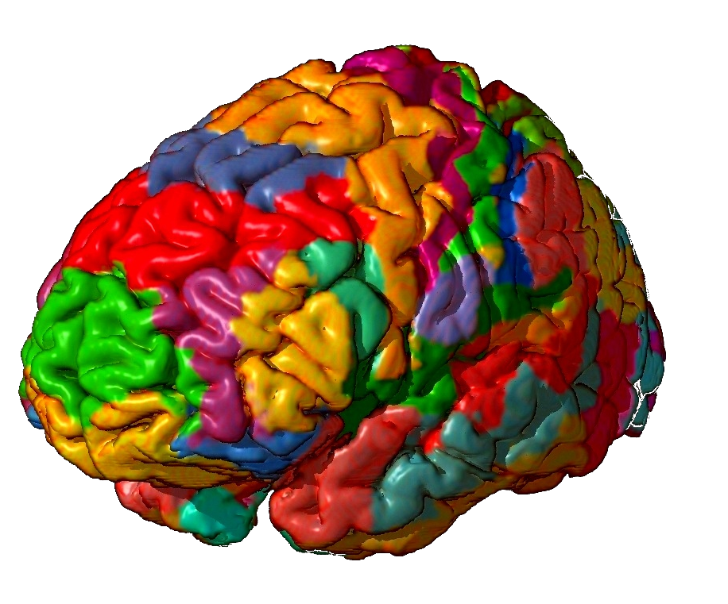

Welcome to PsychologyLand!
Amusement Park of the Mind & Body

Why Visit PsychologyLand? Welcome to PsychologyLand! This is the amusement park where curiosity is the map, experience is the professor, and understanding yourself is the map. Just like a map helps you navigate an amusement park, psychology can help you navigate thoughts, emotions, relationships, and behavior. Whether you're discovering psychology for the first time or reflecting on your own growth, we invite you to explore how the mind works and why it matters. Just like a great amusement park map, psychology doesn’t tell us where to go—but it helps us understand the paths available.